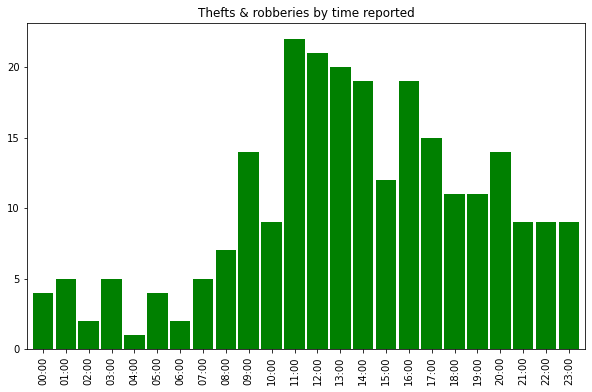
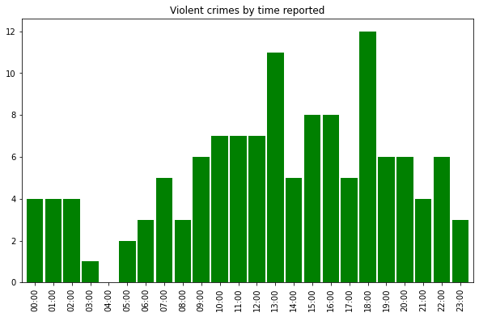

Hyde Park crime map
The University of Chicago Police Department has a site where you can see the various incidents reported to the department each day. I wanted to be able to visualize where these incidents were concentrated, and since each event is labeled with an address, I figured I could create a map to do that.
{kind=link}
To create this, I used Python's Requests and Beautiful Soup libraries to scrape the incident report archives, gathering all incidents from 1 September 2019 to 1 September 2020. I then cleaned up the data and used the Geocoder Python library to get GPS coordinates for each incident address. (I wasn't able to get coordinates for some events that didn't occur at proper numeric addresses.) The final product is just a Matplotlib scatterplot of those coordinates overlaid on an OpenStreetMap view of Hyde Park.
The incidents also have information about when they were reported, so I generated plots of the days and times of day that they were generally reported:
{kind=link}
{kind=link}
The daily counts are interesting -- you can clearly see a sizable decrease in crimes during the holidays, and the July unrest shows up as well. The hourly counts are not quite what I expected; I found it odd that most crimes were committed in the middle of the day, although I guess that is when most people are out and about.
I also broke down the hourly counts by type of crime, as you can see below.
 {kind=link}
Overall, the data are interesting and worth perusing for anyone who lives in Hyde Park, although I didn't come across anything too surprising.